地政学
クアラルンプールは王室儀礼、議会、金融、外交、報道が集まる首都です。マラッカ海峡、イスラム圏、東南アジア市場を結び、代表戦の熱気も国家の物語を街に映します。市場の議論まで政治が届く場です。首都の顔です。

🇲🇾 マレーシア / 東南アジア / World City Atlas
熱帯の谷に首都機能、金融、移民労働、多民族の商業地区、モスク、屋台、鉄道、郊外住宅地が重なるマレーシア最大の都市圏。成長の速さと水、土地、社会の緊張を同時に読む街です。
都市の骨格
クアラルンプールは、錫鉱山の河川合流点から成長し、行政、金融、イスラム文化、華人商業、インド系地区、移民労働、郊外交通を抱える首都圏へ広がりました。
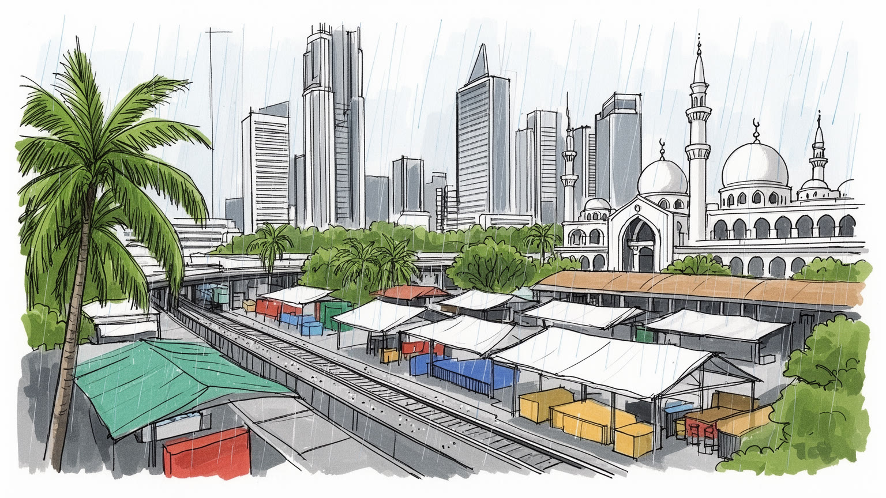
クアラルンプールは王室儀礼、議会、金融、外交、報道が集まる首都です。マラッカ海峡、イスラム圏、東南アジア市場を結び、代表戦の熱気も国家の物語を街に映します。市場の議論まで政治が届く場です。首都の顔です。
銀行、観光、教育、医療、小売が雇用を厚くします。建設、警備、清掃、屋台、配達を担う移民労働者と路上経済が、高層都市の日常を支えます。大学生の副業や起業も街の速度を上げます。夜の商いも続き、職が生まれます。
マレー・中国・インド系の食と祭礼が隣り合い、ラマダン、Eid、旧正月、Deepavali、Thaipusamで街の色と時間が変わります。祈りの声、香辛料の匂い、夜市の湯気も都市の記憶です。祝日ごとに通りも食卓も変わります。家族も集まります。
旅行者は塔、市場、夜市を巡りますが、住民には通学、介護、家賃、熱帯雨、排気、鉄道の音、子どもと高齢者の居場所が切実です。公園でのランニングや運動も日課になります。買い物と夜遊びも生活の一部です。夜も。
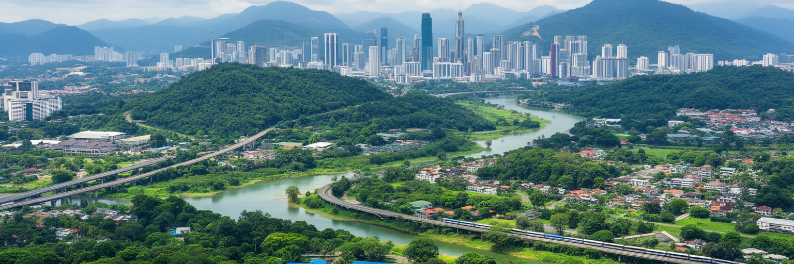
クアラルンプールを読む入口は、クラン川とゴンバック川の合流点に始まった熱帯の谷の都市であることです。錫鉱山の集落として成長した場所は、川、低地、湿った空気、丘陵、熱帯林の縁を抱え、現在の高層街区と高速道路の下にも水の地形を残しています。都心の眺めはペトロナスツインタワーや新しい超高層ビルに引かれやすいが、都市の形を決めるのは水が集まる谷、急な豪雨、切り開かれた斜面、郊外へ伸びる幹線道路です。ブキッ・ビンタンやKLCCの華やかな表情の周囲には、古い商店街、モスク、寺院、市場、住宅地、工事現場が細かく混ざります。熱帯の緑は都市を柔らかく見せる一方、湿度、蚊、排水、斜面崩壊、歩行のしにくさも生みます。クアラルンプールの都市圏はセランゴール州の郊外都市と連続し、行政境界より通勤圏の実感が大きいです。地形を意識すると、首都の成長が単なる高層化ではなく、川を制御し、丘を削り、郊外道路へ生活を広げる過程でしたことが分かります。熱帯都市の美しさと脆さは、同じ水と緑から生まれています。低地の古い街区では、雨の後に歩道の段差や排水溝の詰まりが生活の問題として現れます。豪雨の直後には排気と濡れた舗装の匂い、祈りの声、MRTやLRTの高架音が湿った空気に重なります。丘の上の高級住宅と川沿いの混み合う地区は、同じ景観の中でまったく違う安全性を持ちます。都市の地図は、眺望だけでなく水の逃げ道を読む図でもあります。
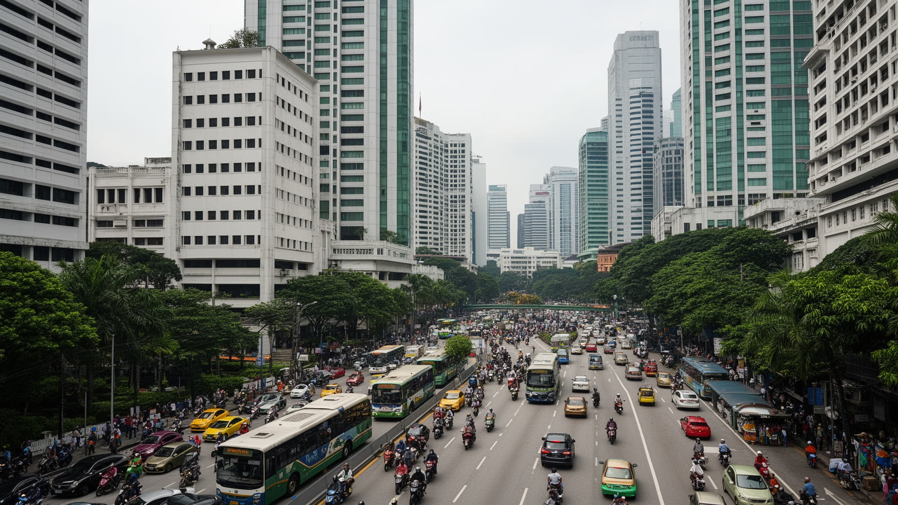
クアラルンプールはマレーシアの首都であり、行政機能の多くが計画都市プトラジャヤへ移った後も、政治の象徴と実務の重みを保っています。連邦議会、王宮、各国大使館、中央銀行、報道機関、政党、裁判、主要企業本社が都市圏に集まり、国家の意思決定は今もこの街の交通と会議室を通って動きます。ムルデカ広場は独立の記憶を示し、植民地期の建築、モスク、官庁、鉄道駅は、英国支配、マレー王権、イスラム、連邦国家の層を重ねて見せます。マレーシア政治は民族、宗教、言語、州、王室、連邦制度の調整を含むため、首都の空間も単純な官庁街ではありません。抗議、選挙、祝祭、王室行事、イスラム行事、国際会議が、道路規制や警備、広場の使い方に表れます。代表戦の夜やKL City FCの試合日には、国旗、クラブ色、屋台の歓声が国家と地域への帰属を街に見せます。プトラジャヤが行政の新しい顔を担う一方、クアラルンプールには歴史的な首都性、金融、メディア、市民の声が残ります。政治を読むには、議会や官庁だけでなく、モスクの説教、新聞、大学、労働組合、商業団体、移民政策を同じ都市の回路として見る必要があります。首都の政治は、民族間の配分や言語教育、宗教の公的な扱いをめぐる日常の議論でもあります。選挙の熱気は都心の広場だけでなく、郊外の住宅地、大学、食堂、タクシーの会話へ広がります。制度の中心が二つに分かれたからこそ、この街には象徴と市民社会の力が濃く残っています。
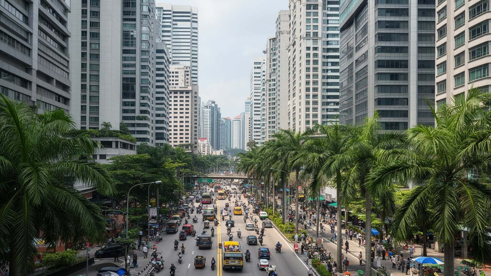
クアラルンプールの経済は、首都機能と金融サービスの集中によって東南アジアの中で独自の位置を持ちます。銀行、保険、イスラム金融、証券、会計、法律、通信、IT、観光、不動産、教育、医療が重なり、KLCCやトゥン・ラザク・エクスチェンジの高層街区は国際資本を受け止める窓口になっています。イスラム金融は単なる宗教的な金融商品ではなく、マレーシアが中東、東南アジア、国内のムスリム市場をつなぐ制度設計として育ててきた分野です。シャリアに適合する投資や債券、保険は、法務、監査、規制、教育を含む専門職の厚みを必要とします。ですが高層ビルの成長は、家賃上昇、交通混雑、所得差も連れてくります。観光ホテル、ショッピングモール、会議場、病院、大学は外からの人を呼び込む一方、清掃、警備、厨房、配送、建設の現場労働に強く依存します。学生は大学とカフェ、配車アプリ、メディア発信、買い物空間を行き来し、消費者であると同時に労働力にもなります。サービス都市としての成功は、洗練された金融の表面だけでなく、働く人が都市に住めるか、技能を伸ばせるかで決まります。資本を集める力と生活の基盤を支える力を同時に見ることが、この街の経済を読む近道です。デジタル決済や配車、宅配、越境ECは若い専門職に機会を開くが、歩合制の配達員や小規模商店には不安定さも生みます。経済の高度化は、教育機会、英語とマレー語の運用、移民の資格、女性の就労環境と結びついています。
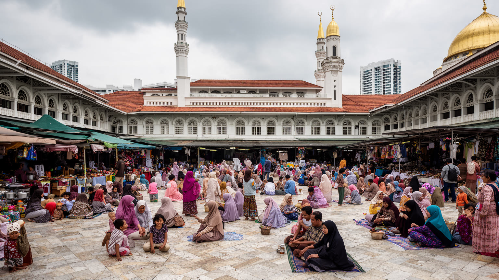
クアラルンプールでは、マレー・イスラムの制度と生活文化が都市の時間を形づくります。国立モスク、ジャメ・モスク、地区の礼拝所、イスラム学校、ハラル認証、金曜礼拝、ラマダンのバザール、Eidにあたるハリラヤの帰省と祝祭は、宗教を個人の内面だけでなく公共空間のリズムとして見せます。マレーシアではイスラムが連邦の公式宗教であり、マレー人のアイデンティティ、王室、教育、家族法、政治と深く結びつきます。首都ではその制度性が、オフィスの祈祷室、食堂のハラル表示、服装、行事、放送、祝日の交通に現れます。一方で、マレー・イスラムは一枚岩ではありません。都市の若者、地方から来た学生、公務員、宗教指導者、企業家、芸術家、女性たちは、敬虔さ、現代的な働き方、消費文化、政治的な議論をそれぞれの形で組み合わせています。多民族都市であるクアラルンプールでは、イスラムの公共性は他宗教との距離の取り方にも関わります。礼拝の音、食のルール、学校、結婚、服装をめぐる感覚は、隣人関係や職場の配慮として日々調整されます。モスクを見ることは建築を見るだけでなく、首都の制度、信仰、家族、労働時間がどう重なるかを読むことです。ラマダンの夕方には、官庁街、住宅地、駅前、屋台が同じ断食明けの時間へ向かい、都市の速度が一時的に変わります。信仰は観光名所の外側で、勤務表、学校行事、買い物、親族訪問を組み替える力として働いています。
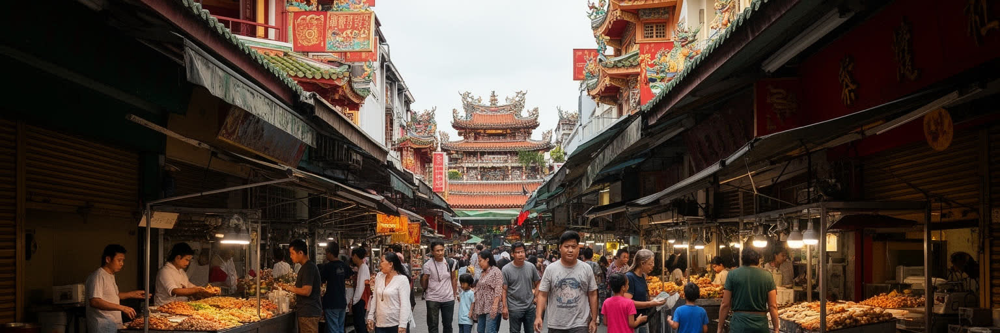
クアラルンプールの多民族性は、統計よりも地区を歩くとよく分かります。チャイナタウン周辺には華人商人、会館、寺院、漢字看板、市場、食堂、薬材店、土産物店、再開発の圧力が重なり、ブリックフィールズにはリトルインディアとして知られる商店、ヒンドゥー寺院、サリー、音楽、菜食料理、鉄道駅、視覚障害者支援の歴史があります。Pasar SeniやChow Kitでは、買い物、屋台、香辛料、衣料、果物、日雇いの仕事が近い距離に並びます。これらの地区は観光用の色彩だけでなく、移民の労働、相互扶助、信仰、教育、商売の記憶を持ちます。華人社会は錫鉱山、商業、教育、金融、中小企業を通じて都市の成長に深く関わり、インド系社会は植民地期の労働、鉄道、ゴム農園、法律、医療、教育、飲食の分野で存在感を持ってきました。旧正月、Deepavali、Thaipusamの時期には、店の装い、寺院の人出、家族の移動が街路を変えます。寺院や会館は宗教施設であると同時に、葬儀、奨学金、祭礼、地域の相談を支える場所でもあります。ですが再開発と観光化は、古い店の家賃、歩行者の混雑、地区の意味を変えていきます。多文化の街を読むには、写真に映える看板だけでなく、誰が店を継ぎ、どの言語で学び、祭りの費用を誰が出し、若い世代がどこへ移るのかを見る必要があります。旧市街の店先では、マレー語、広東語、福建語、タミル語、英語が状況に応じて使い分けられます。言語の切り替えは商売の技術であり、隣人との距離を測る方法でもあります。
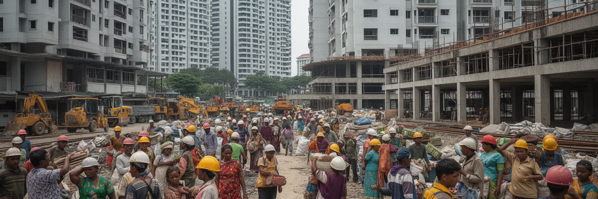
クアラルンプールの成長は、国内各地から来る人びとと、インドネシア、バングラデシュ、ネパール、ミャンマー、フィリピン、パキスタンなどからの移民労働に大きく支えられています。高層ビルの建設、道路工事、警備、清掃、家事、介護、飲食、ホテル、物流、工場、配達の仕事は、都市が毎日動くために欠かせません。ですが、その労働は華やかな都心の景観から見えにくくなります。雇用仲介、在留資格、寮の環境、賃金未払い、労災、言語、医療へのアクセスは、移民労働者にとって現実的なリスクです。マレーシア人の専門職や中間層が使うモール、住宅、交通、食堂は、多くの場合、低賃金の現場労働によって清潔で便利に保たれています。移民は一時的な労働力として扱われがちですが、都市の社会には彼らの祈り、送金、休日の集まり、食料品店、携帯電話店、送金窓口も刻まれています。路上の小商い、夜市の片付け、屋台の皿洗いは、都市の表の経済と裏の生活を結びます。クアラルンプールを読むなら、金融街の成功と建設現場の安全を切り離せません。成長都市の倫理は、完成したビルの高さではなく、それを建て、清掃し、守り、食事を作る人が尊厳を持って働けるかで測られます。見えにくい労働を可視化することが、都市の本当の規模を理解する第一歩になります。休日の広場や駅前に集まる移民労働者の姿は、都市が国境を越えた家族の送金で成り立つことを示します。事故や病気の時に誰へ相談できるかは、労働市場の問題であると同時に都市の公共性の問題でもあります。
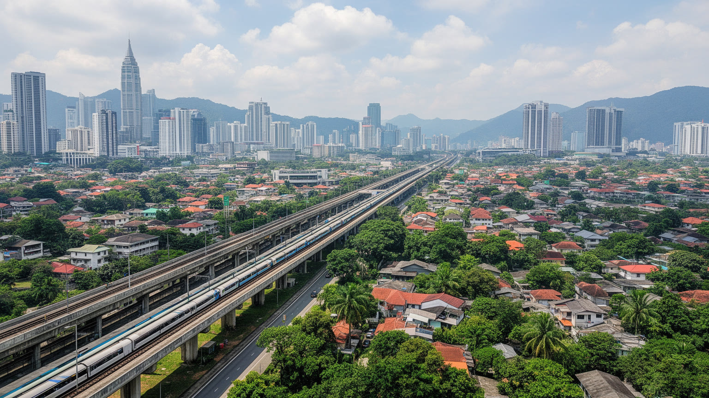
クアラルンプールの暮らしは、鉄道網の改善と自動車依存のスプロールが同時に進む中で成り立ちます。LRT、MRT、モノレール、KTMコミューター、空港鉄道は都心、郊外、空港を結び、近年は乗り換え拠点や新駅周辺の開発も増えました。それでも都市圏は広く、住宅地、工業団地、大学、ショッピングモール、ゲート付き住宅が高速道路に沿って伸びているため、車なしでは不便な場所が多いです。朝夕の渋滞は、通勤時間、燃料費、子どもの送迎、宅配、救急、バスの信頼性に影響します。高架道路と立体交差は速さを与えますが、歩行者には渡りにくい街路や日陰の少ない歩道を生みます。鉄道駅の周辺でも、最後の一キロを歩きやすくする歩道、横断、バス接続、暑さ対策が不足すれば、利用しやすさは限られます。公園や湖の周りでは、朝夕のランニング、子どもの遊び、高齢者の体操が、車社会の中で貴重な歩ける時間を作ります。交通は単なる移動技術ではなく、誰がどこに住めるか、どの学校や職場に届くかを決める社会政策です。クアラルンプールを交通から読むには、華やかな駅と同時に、渋滞する環状道路、郊外の住宅ローン、バイク配達、歩道橋の上の暑さを見る必要があります。都市の広がりは便利さを増やす一方、時間とエネルギーの負担を住民へ配分しています。駅前の再開発が高所得者向けに偏ると、公共交通の近くに住む権利は限られた人のものになります。バス停の日陰、歩道の連続性、車いすでの移動も、都市の公平性を測る具体的な指標です。
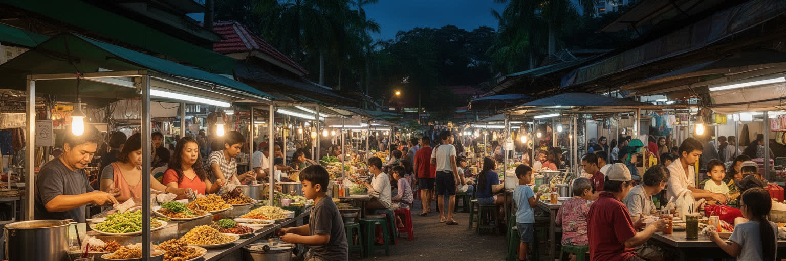
クアラルンプールの食は、都市を理解する最も身近な入口です。ナシレマ、サテー、ロティチャナイ、テータリック、ラクサ、チャークイティオ、バクテー、バナナリーフカレー、点心、屋台の焼き物、果物、甘い菓子が、マレー系、中国系、インド系、周辺地域の味を日常に並べます。ジャラン・アロー、チャイナタウン、カンポン・バル、ブリックフィールズ、Pasar Seni、Chow Kit、ナイトマーケット、モールのフードコートは、観光地である前に働く人の食堂です。ハラルのルール、菜食、豚肉を扱う店、寺院やモスク近くの食習慣は、宗教と商売の距離を教えます。食文化は多文化の調和を分かりやすく見せるが、厨房の労働、食材価格、家賃、衛生規制、外国人労働者、深夜営業の負担も含みます。屋台街が再開発や観光化で整えられると、清潔さや安全性は上がる一方、昔からの店が残れるかが問われます。クアラルンプールを食から読むには、名物を列挙するだけでなく、誰が調理し、誰が食べ、どの言語で注文し、宗教上の配慮がどう守られ、価格がどこまで日常的かを見る必要があります。食卓は、民族、宗教、階層、移民労働、観光が一皿に重なる場所です。朝食の屋台、昼のオフィス街の定食、夜の市場は、それぞれ違う労働時間に合わせて開きます。辛さや甘さ、肉の扱い、相席の距離まで、都市の共存の技術が食事の中に現れます。
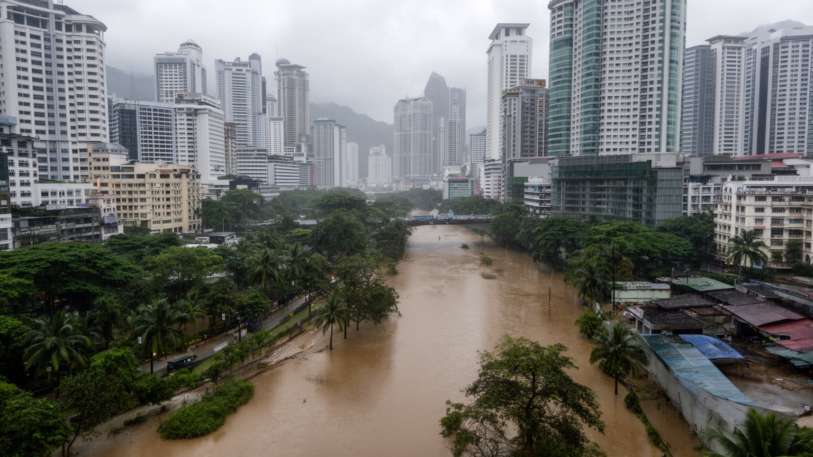
クアラルンプールの熱帯気候は、緑の豊かさと同時に豪雨、蒸し暑さ、洪水を都市へもたらします。年間を通じて高温多湿で、午後の強い雨や季節的なモンスーンは、道路、地下空間、河川、排水溝、工事現場を一気に試します。低地に発達した都心では、水が集まりやすく、短時間の豪雨でも冠水、渋滞、停電、地下施設への浸水が起きることがあります。SMARTトンネルのような洪水対策は、道路と排水を組み合わせた都市技術として知られるが、気候変動による雨の激しさ、上流の開発、斜面の土地利用、排水路の維持が不十分であればリスクは残ります。暑さも大きな課題です。アスファルト、高層ビル、車の排熱、日陰の少ない歩道は、屋外労働者、高齢者、子ども、低所得世帯に負担をかけます。冷房は快適さを支えますが、電力消費と屋外排熱を増やします。気候から都市を読むには、ツインタワーの眺めだけでなく、川沿いの住宅、排水溝を掃除する人、斜面の集落、洪水後の清掃、学校への通学路を見る必要があります。水と暑さに強い都市は、巨大なインフラだけでなく、日陰、緑、歩道、住宅の安全、早い警報、弱い人への支援によって作られます。洪水は全員に同じように来るわけではありません。車を持つ世帯、低地の借家、屋台、地下店舗、建設現場では被害の形が違います。気候適応は、排水計画と福祉、住宅、労働安全を結びつける都市政策でなければなりません。
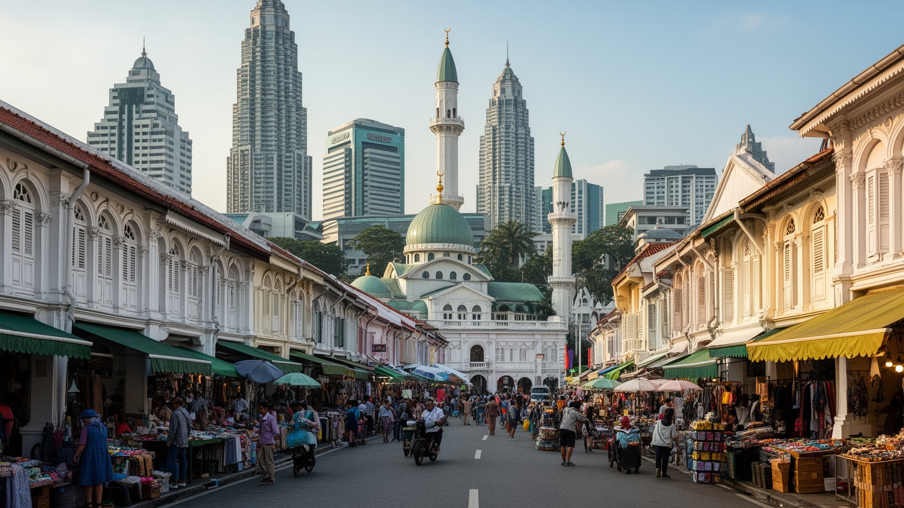
クアラルンプール観光は、高層都市の現在と多層の遺産を短い距離で見せます。ペトロナスツインタワーやKLCCは国家の近代化とエネルギー企業の象徴であり、ムルデカ広場、スルタン・アブドゥル・サマド・ビル、旧鉄道駅、チャイナタウン、セントラルマーケットは、植民地支配、商業、独立の記憶を伝えます。バトゥ洞窟はヒンドゥー教の巡礼地であり、観光名所としてだけでなく、タイプーサムの祭礼とインド系社会の信仰を示す場所です。国立モスクやイスラム美術館は、マレーシアのイスラム文化と国家表象を伝えます。夜のBukit Bintangでは、買い物、屋台、バー、家族連れ、若者、配車待ちの人が明るい通りに集まります。観光客は短時間で多くの名所を巡れるが、その便利さは交通、清掃、警備、ホテル、案内、屋台、土産物店の労働に支えられます。観光化は地区に収入をもたらす一方、古い商店街の家賃、住民の静けさ、宗教施設の尊厳に影響します。遺産を読むには、写真を撮る場所だけでなく、誰の歴史が説明され、どの記憶が薄められ、収入が地域へ戻るのかを見る必要があります。クアラルンプールの魅力は、未来志向の高層ビルと、川沿いの旧市街、寺院、モスク、市場が同じ旅程に入る近さにあります。旅行者が礼拝所や祭礼を訪れる時、服装、撮影、混雑への配慮は観光の質そのものになります。遺産は消費される背景ではなく、住民の信仰と記憶が今も使う場所です。
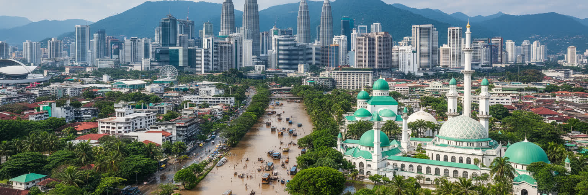
クアラルンプールを読むことは、成長する東南アジア都市の明るさと矛盾を同じ地図に置くことです。熱帯の川の合流点から始まった都市は、首都政治、王室儀礼、イスラム金融、華人商業、インド系地区、移民労働、観光、郊外住宅地を抱える巨大な都市圏へ広がりました。ペトロナスツインタワーの景観は国際都市の自信を示しますが、その足元には市場、モスク、寺院、古い長屋、工事現場、交通渋滞、洪水リスクがあります。多民族社会は食や祭礼の豊かさを生む一方、教育、言語、宗教、所得、政治代表をめぐる緊張も抱えます。学校、団地、公園ではサッカー、バドミントン、Sepak takrawが身近な運動として続き、試合観戦は家族や友人の時間にもなります。行政機能の一部がプトラジャヤへ移っても、クアラルンプールは金融、メディア、市民生活、国際観光の中心であり続けます。都市を評価するには、GDPや高層ビルだけでなく、移民労働者の寮、歩道の暑さ、洪水後の復旧、屋台の価格、寺院とモスクの共存、郊外通勤の時間を見る必要があります。クアラルンプールの重要性は、完成された秩序ではなく、急速な開発、多文化の交渉、熱帯の気候条件を毎日調整している点にあります。そこに現代都市の未来と難しさが、濃く表れています。街を歩く視点を少し下げると、排水溝、歩道橋、祈祷室、送金店、フードコート、バス停が都市の実力を語り始めます。成長を続ける首都の価値は、世界へ見せる象徴と、住民が毎日使う小さな設備を結びつけられるかにかかっています。